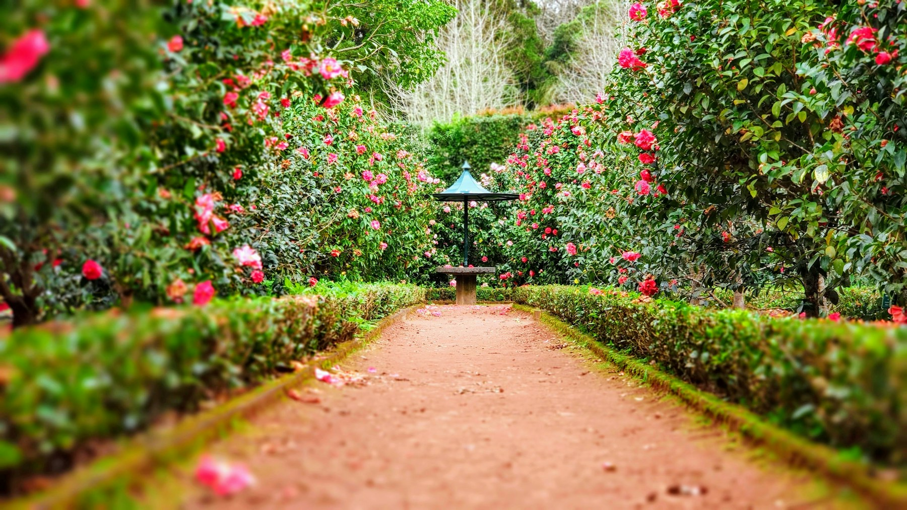
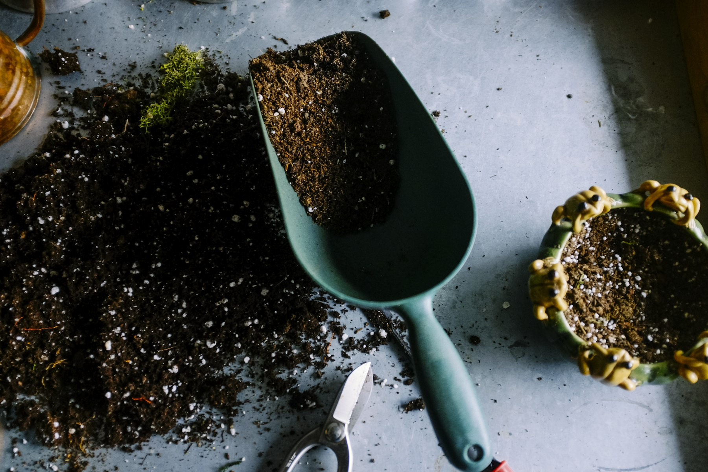

01
Выездная консультация
Обсуждаем состояние сада, ваши задачи и возможный план работ.
6 000 ₽2–3 часа
↗
Про нас
01 / Внимание к живомуНаша фамилия, наш бренд и гарантия качества наших услуг.
Наша миссия — делать деревья красивыми, людей счастливыми и создавать гармоничные природные пространства!
Мы учились на курсе «Архитектор Деревьев» мастерской «Ниваки и бонсай Андрея Дарусенкова», а также у Дмитрия Звонка, Александра Задоркина, Александра Толоконникова и в «Школе чаирного садоводства» Дмитрия Соколова. Регулярно повышаем квалификацию, участвуем в профильных мероприятиях, развиваем насмотренность в путешествиях и ведём канал «Ниваки Крым».
Доверяя нам заботу о растениях, вы можете быть уверены, что садом занимаются профессионалы своего дела.
В работе мы используем остро заточенные японские инструменты, которые оставляют чистые и ровные срезы для быстрого заживления и восстановления растений. Регулярно чистим и обрабатываем инструменты перед работой с каждым деревом.
Художественная обрезка, ниваки, живые изгороди, плодовые сады и дизайн цветников. К нам можно обратиться за отдельной услугой или регулярным уходом.
Уточним задачу: что сохранить, что изменить, сколько внимания вы сами готовы уделить саду. Состав работ, способ оплаты и условия согласуем заранее.
Познакомиться с вашим садомФото и описание помогут оценить объём. Если нужен осмотр, договоримся о консультации.
Обсудим состав работ, доступ к растениям, транспорт и растительные остатки.
Разовый выезд или четыре встречи с садом в месяц — подберём подходящий формат.
Сезонный уход
02 / Ритм вашего садаВ каждом сезоне свои задачи.
Планируем работы с учётом растений,
погоды и условий вашего участка.
Это ориентир, а не универсальный календарь. Конкретные сроки и приёмы определяем после оценки растений и условий участка в Крыму.
Услуги и стоимость
03 / Понятные форматыВыберите удобную отправную точку.
Детали вашего сада обсудим вместе.
Обсуждаем состояние сада, ваши задачи и возможный план работ.
Цветники, посадки, обрезка лиственных деревьев и кустарников.
Работа с формой хвойных растений, ниваки и топиарными композициями.
К стоимости дня садовника и обрезки хвойных добавляются транспортные расходы за пределами Симферопольского района. Расходные материалы, уборку и вывоз веток обсуждаем индивидуально.
Регулярная забота
Вместо 60 000 ₽ за четыре разовых выезда
Примерный состав: план для вашего сада согласуем индивидуально.
Обсудить обслуживаниеНовая жизнь знакомого сада
Проектирование и реализация изменений.
Объём и стоимость зависят от состояния участка и ваших задач.
Обсудить измененияСпил деревьев, благоустройство, расчистка участков, проектирование автополива, сезонные обработки, ландшафтный дизайн и подбор растений.
Рассказать о задаче ↗Примеры работ
04 / От замысла к формеФорма кроны, ритм посадок,
детали, которые меняют весь участок.
Обрезка хвойных и ниваки · обновление сада · сезонный уход
Ожидаем фотографии и описания с Яндекс Диска. Чужие сады не выдаём за выполненные работы.
Блог / Ниваки Крым
Заметки о растениях, формировании деревьев и жизни сада — в нашем Telegram-канале.
Читать «Ниваки Крым» ↗Публикации для сайта отберём из канала на следующем этапе.

Заявка
05 / Начнём с вашего садаРасскажите о задаче и приложите фотографии. Это поможет подготовиться к разговору и оценить объём работ.
Тестовая анкета: сообщения и файлы пока никуда не отправляются. Можно проверить заполнение и посмотреть итог заявки.
Или написать в MAX ↗До первого выезда
Фотографии помогают предварительно понять задачу. Если по ним недостаточно информации, обсудим осмотр участка. Окончательный состав работ и стоимость согласуем после уточнения деталей.
Расходники, уборка и вывоз растительных остатков обсуждаются индивидуально. Отметьте в заявке, нужен ли вывоз, чтобы учесть его при расчёте.
Работаем по Крыму. Для дня садовника и обрезки хвойных за пределами Симферопольского района дополнительно учитываются транспортные расходы.